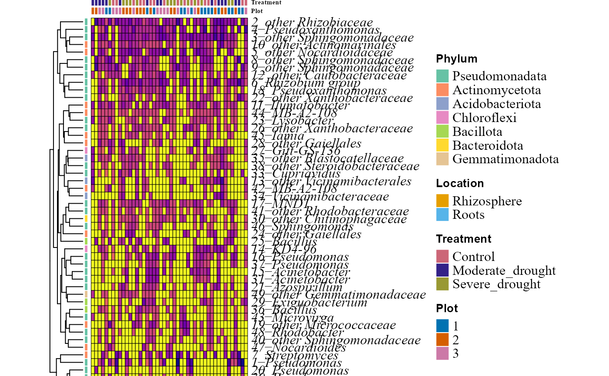
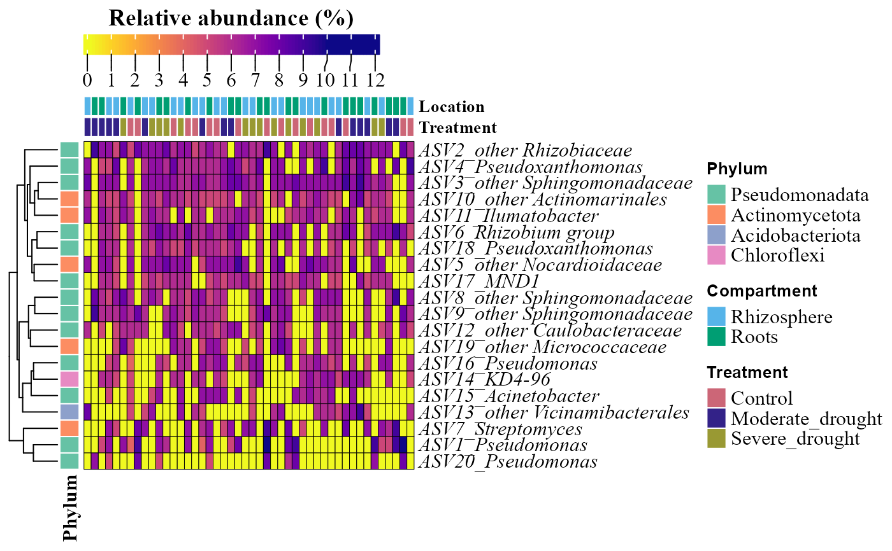

Creates a heatmap (with ComplexHeatmap) of the relative abundance of the most abundant features (ASVs, OTUs or taxa).
Usage
abundance_heatmap_plot(
table,
metadata = NULL,
condition1 = NULL,
condition2 = NULL,
condition3 = NULL,
colors_condition1 = NULL,
colors_condition2 = NULL,
colors_condition3 = NULL,
name_legend_condition1 = NULL,
name_legend_condition2 = NULL,
name_legend_condition3 = NULL,
top_n = 15,
exclude_unclassified = TRUE,
cluster = TRUE,
show_column_names = TRUE,
cell_size = NULL,
annotation_height = NULL,
save_table = FALSE,
table_filename = "abundance_heatmap_table.txt",
feature_prefix = "",
max_label_length = 35,
composite_names = TRUE,
draw = TRUE
)Arguments
- table
A data frame with taxa in rows and samples in columns. The last column must be named
taxonomy, containing full taxonomic strings.- metadata
A data frame containing sample metadata. Its first column must hold the sample IDs (the column names of
table). Optional: ifNULL(default), the heatmap has no sample annotations.- condition1
Character. Name of the column in
metadatafor the first column annotation. Optional;NULL(default) for none.- condition2
Character. Name of the column in
metadatafor the second column annotation. Optional;NULL(default) for none.- condition3
Character. Name of the column in
metadatafor the third column annotation. Optional;NULL(default) for none.- colors_condition1
Optional character vector of colors for
condition1. If named, colors are matched to the values by name (e.g.c(Roots = "#009E73", Rhizosphere = "#56B4E9")); otherwise they are assigned in alphabetical order of the values. IfNULL(default), the colorblind-friendly Okabe-Ito palette is used.- colors_condition2
Optional character vector of colors for
condition2(same rules ascolors_condition1). IfNULL(default), colors of the colorblind-friendly "Safe" palette are used, which contrast with those ofcondition1.- colors_condition3
Optional character vector of colors for
condition3(same rules ascolors_condition1). IfNULL(default), a third set of colorblind-friendly colors is used.- name_legend_condition1
Character. Title of the legend of
condition1. IfNULL(default), the name ofcondition1is used.- name_legend_condition2
Character. Title of the legend of
condition2. IfNULL(default), the name ofcondition2is used.- name_legend_condition3
Character. Title of the legend of
condition3. IfNULL(default), the name ofcondition3is used.- top_n
Integer. Number of most abundant features to show. Default
15.- exclude_unclassified
Logical. If
TRUE(default), taxa with no classification at any level ("Unclassified") are dropped before selecting thetop_nmost abundant features, so all the rows are identified taxa. UseFALSEto keep them.- cluster
Logical. If
TRUE(default), the rows are clustered; ifFALSE, they are ordered by abundance.- show_column_names
Logical. If
TRUE(default), the sample names are shown.- cell_size
Numeric. Side, in millimeters, of each (square) cell. If
NULL(default), it is set automatically.- annotation_height
Numeric. Height, in millimeters, of each column annotation bar (
condition1,condition2,condition3). IfNULL(default), the cell height is used.- save_table
Logical. If
TRUE, saves the abundance table shown in the heatmap as a tab-delimited file. DefaultFALSE.- table_filename
Character. Name or path of the saved file (used when
save_table = TRUE). Default"abundance_heatmap_table.txt".- feature_prefix
Character. Prefix of the row labels, before the row number (e.g.
feature_prefix = "ASV"labels the rows"ASV1","ASV2"...). Default""(rows labeled"1","2"...).- max_label_length
Integer. Taxon names longer than this many characters are cut with an ellipsis in the row labels.
NULLnever cuts them. Default35.- composite_names
Logical. If
TRUE(default), SILVA composite names of three or more genera are labeled with the last genus plus "group" (e.g. "Allorhizobium-Neorhizobium-Pararhizobium-Rhizobium" becomes "Rhizobium group"); two-genus names (e.g. "Escherichia-Shigella") are kept whole. The full names are kept in the saved table.- draw
Logical. If
TRUE(default), the heatmap is drawn on the current device. UseFALSEto only build the returned grob without drawing it, e.g. to combine it with other plots; then, unlesscell_sizeis given, cells stretch to fill the panel they are placed in instead of having a fixed size.
Value
Invisibly, a gTree (grid grob) with the heatmap of the
top_n most abundant features. Printing it (e.g. typing its name)
draws the heatmap; it can also be combined with other plots (e.g.
cowplot::plot_grid(), patchwork::wrap_elements()).
Examples
table_path <- system.file("extdata", "tabla_bacteria.txt", package = "MicroBioMeta")
table <- read.delim(table_path, row.names = 1, check.names = FALSE)
metadata_path <- system.file("extdata", "metadata_bacteria.txt", package = "MicroBioMeta")
metadata <- read.delim(metadata_path, check.names = FALSE)
abundance_heatmap_plot(
table = table,
metadata = metadata,
condition1 = "Location",
condition2 = "Treatment",
condition3 = "Plot",
top_n = 50,
cluster = TRUE,
show_column_names = FALSE,
name_legend_condition1 = "Location",
name_legend_condition2 = "Treatment",
name_legend_condition3 = "Plot"
)
#> Warning: Note: Some bacterial phylum names have been updated to match NCBI's revised taxonomy:
#>
#> Reference: https://ncbiinsights.ncbi.nlm.nih.gov/2021/12/10/ncbi-taxonomy-prokaryote-phyla-added/

# \donttest{
heat <- abundance_heatmap_plot(
table = table,
metadata = metadata,
condition1 = "Location",
condition2 = "Treatment",
top_n = 20,
show_column_names = FALSE,
colors_condition1 = c(Rhizosphere = "#56B4E9", Roots = "#009E73"),
colors_condition2 = c(
Control = "#CC6677",
Moderate_drought = "#332288",
Severe_drought = "#999933"
),
name_legend_condition1 = "Compartment",
feature_prefix = "ASV",
max_label_length = 30,
draw = FALSE
)
#> Warning: Note: Some bacterial phylum names have been updated to match NCBI's revised taxonomy:
#>
#> Reference: https://ncbiinsights.ncbi.nlm.nih.gov/2021/12/10/ncbi-taxonomy-prokaryote-phyla-added/
heat # printing the returned object draws the heatmap

# }